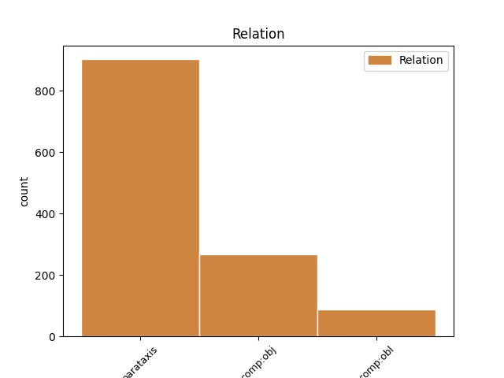
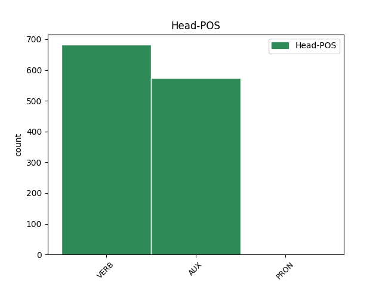
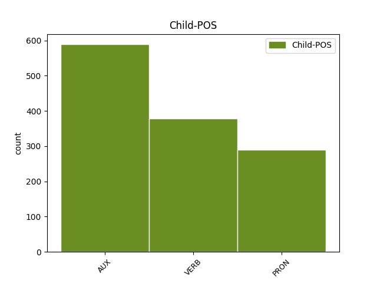

Distribution of features within this leaf



Agreement Rules sorted by frequency.
- When the dependent token is the parataxis(parataxis) of the head token, and the head token is AUX and the dependent token is AUX.
1 Kulturno-umjetnički _ _ _ _ 0 _ _ _
2 program _ _ _ _ 0 _ _ _
3 bio _ _ _ _ 0 _ _ _
4 je biti AUX Var3s Mood=Ind|Number=Sing|Person=3|Tense=Pres|VerbForm=Fin 0 _ _ _
5 veoma _ _ _ _ 0 _ _ _
6 bogat _ _ _ _ 0 _ _ _
7 , _ _ _ _ 0 _ _ _
8 bilo _ _ _ _ 0 _ _ _
9 je biti AUX Var3s Mood=Ind|Number=Sing|Person=3|Tense=Pres|VerbForm=Fin 4 parataxis _ _
10 mnogo _ _ _ _ 0 _ _ _
11 pjesme _ _ _ _ 0 _ _ _
12 i _ _ _ _ 0 _ _ _
13 plesa _ _ _ _ 0 _ _ _
14 , _ _ _ _ 0 _ _ _
15 a _ _ _ _ 0 _ _ _
16 za _ _ _ _ 0 _ _ _
17 što _ _ _ _ 0 _ _ _
18 su _ _ _ _ 0 _ _ _
19 zaslužna _ _ _ _ 0 _ _ _
20 kulturno-umjetnička _ _ _ _ 0 _ _ _
21 društva _ _ _ _ 0 _ _ _
22 KUD _ _ _ _ 0 _ _ _
23 Antun _ _ _ _ 0 _ _ _
24 Mihanović _ _ _ _ 0 _ _ _
25 iz _ _ _ _ 0 _ _ _
26 Bestovja _ _ _ _ 0 _ _ _
27 , _ _ _ _ 0 _ _ _
28 KUD _ _ _ _ 0 _ _ _
29 Žumberčani _ _ _ _ 0 _ _ _
30 KUD _ _ _ _ 0 _ _ _
31 Vedar _ _ _ _ 0 _ _ _
32 Osmijeh _ _ _ _ 0 _ _ _
33 i _ _ _ _ 0 _ _ _
34 Mješoviti _ _ _ _ 0 _ _ _
35 zbor _ _ _ _ 0 _ _ _
36 G.U. _ _ _ _ 0 _ _ _
37 Prečko _ _ _ _ 0 _ _ _
38 . _ _ _ _ 0 _ _ _
1 Nije biti AUX Var3s Mood=Ind|Number=Sing|Person=3|Tense=Pres|VerbForm=Fin 0 _ _ _
2 trenutna _ _ _ _ 0 _ _ _
3 , _ _ _ _ 0 _ _ _
4 mislim _ _ _ _ 0 _ _ _
5 da _ _ _ _ 0 _ _ _
6 je _ _ _ _ 0 _ _ _
7 tek _ _ _ _ 0 _ _ _
8 u _ _ _ _ 0 _ _ _
9 razvitku _ _ _ _ 0 _ _ _
10 , _ _ _ _ 0 _ _ _
11 treba trebati VERB Vmr3s Mood=Ind|Number=Sing|Person=3|Tense=Pres|VerbForm=Fin 1 parataxis _ _
12 joj _ _ _ _ 0 _ _ _
13 dati _ _ _ _ 0 _ _ _
14 šansu _ _ _ _ 0 _ _ _
15 . _ _ _ _ 0 _ _ _
1 " _ _ _ _ 0 _ _ _
2 Njemačke _ _ _ _ 0 _ _ _
3 kompanije _ _ _ _ 0 _ _ _
4 osjećaju osjećati VERB Vmr3p Mood=Ind|Number=Plur|Person=3|Tense=Pres|VerbForm=Fin 0 _ _ _
5 kako _ _ _ _ 0 _ _ _
6 strana _ _ _ _ 0 _ _ _
7 potražnja _ _ _ _ 0 _ _ _
8 više _ _ _ _ 0 _ _ _
9 nije _ _ _ _ 0 _ _ _
10 onako _ _ _ _ 0 _ _ _
11 dinamična _ _ _ _ 0 _ _ _
12 kakva _ _ _ _ 0 _ _ _
13 je _ _ _ _ 0 _ _ _
14 nekoć _ _ _ _ 0 _ _ _
15 bila _ _ _ _ 0 _ _ _
16 i _ _ _ _ 0 _ _ _
17 kako _ _ _ _ 0 _ _ _
18 globalna _ _ _ _ 0 _ _ _
19 ekonomija _ _ _ _ 0 _ _ _
20 ulazi _ _ _ _ 0 _ _ _
21 u _ _ _ _ 0 _ _ _
22 slabu _ _ _ _ 0 _ _ _
23 fazu _ _ _ _ 0 _ _ _
24 " _ _ _ _ 0 _ _ _
25 , _ _ _ _ 0 _ _ _
26 rekao _ _ _ _ 0 _ _ _
27 je biti AUX Var3s Mood=Ind|Number=Sing|Person=3|Tense=Pres|VerbForm=Fin 4 parataxis _ _
28 ekonomist _ _ _ _ 0 _ _ _
29 Dekabanka _ _ _ _ 0 _ _ _
30 , _ _ _ _ 0 _ _ _
31 Andreas _ _ _ _ 0 _ _ _
32 Scheuerle _ _ _ _ 0 _ _ _
33 , _ _ _ _ 0 _ _ _
34 za _ _ _ _ 0 _ _ _
35 list _ _ _ _ 0 _ _ _
36 Die _ _ _ _ 0 _ _ _
37 Welt _ _ _ _ 0 _ _ _
38 . _ _ _ _ 0 _ _ _
1 " _ _ _ _ 0 _ _ _
2 Kompanije _ _ _ _ 0 _ _ _
3 iz _ _ _ _ 0 _ _ _
4 svih _ _ _ _ 0 _ _ _
5 sektora _ _ _ _ 0 _ _ _
6 objavljuju objavljivati VERB Vmr3p Mood=Ind|Number=Plur|Person=3|Tense=Pres|VerbForm=Fin 0 _ _ _
7 bolje _ _ _ _ 0 _ _ _
8 poslovne _ _ _ _ 0 _ _ _
9 rezultate _ _ _ _ 0 _ _ _
10 nego _ _ _ _ 0 _ _ _
11 što _ _ _ _ 0 _ _ _
12 se _ _ _ _ 0 _ _ _
13 očekivalo _ _ _ _ 0 _ _ _
14 , _ _ _ _ 0 _ _ _
15 što _ _ _ _ 0 _ _ _
16 ukazuje _ _ _ _ 0 _ _ _
17 na _ _ _ _ 0 _ _ _
18 poboljšanje _ _ _ _ 0 _ _ _
19 situacije _ _ _ _ 0 _ _ _
20 u _ _ _ _ 0 _ _ _
21 gospodarstvu _ _ _ _ 0 _ _ _
22 , _ _ _ _ 0 _ _ _
23 no _ _ _ _ 0 _ _ _
24 sve _ _ _ _ 0 _ _ _
25 dok _ _ _ _ 0 _ _ _
26 ne _ _ _ _ 0 _ _ _
27 dođe _ _ _ _ 0 _ _ _
28 do _ _ _ _ 0 _ _ _
29 jačanja _ _ _ _ 0 _ _ _
30 tržišta _ _ _ _ 0 _ _ _
31 rada _ _ _ _ 0 _ _ _
32 , _ _ _ _ 0 _ _ _
33 ne _ _ _ _ 0 _ _ _
34 možemo _ _ _ _ 0 _ _ _
35 reći _ _ _ _ 0 _ _ _
36 da _ _ _ _ 0 _ _ _
37 je _ _ _ _ 0 _ _ _
38 oporavak _ _ _ _ 0 _ _ _
39 čvrst _ _ _ _ 0 _ _ _
40 " _ _ _ _ 0 _ _ _
41 , _ _ _ _ 0 _ _ _
42 kaže kazati VERB Vmr3s Mood=Ind|Number=Sing|Person=3|Tense=Pres|VerbForm=Fin 6 parataxis _ _
43 potpredsjednik _ _ _ _ 0 _ _ _
44 u _ _ _ _ 0 _ _ _
45 tvrtki _ _ _ _ 0 _ _ _
46 Capital _ _ _ _ 0 _ _ _
47 Advisors _ _ _ _ 0 _ _ _
48 Peter _ _ _ _ 0 _ _ _
49 Smith _ _ _ _ 0 _ _ _
50 . _ _ _ _ 0 _ _ _
1 Samsonova _ _ _ _ 0 _ _ _
2 majka _ _ _ _ 0 _ _ _
3 Mara _ _ _ _ 0 _ _ _
4 je _ _ _ _ 0 _ _ _
5 neplodna _ _ _ _ 0 _ _ _
6 i _ _ _ _ 0 _ _ _
7 već _ _ _ _ 0 _ _ _
8 je _ _ _ _ 0 _ _ _
9 izgubila _ _ _ _ 0 _ _ _
10 nadu _ _ _ _ 0 _ _ _
11 da _ _ _ _ 0 _ _ _
12 će _ _ _ _ 0 _ _ _
13 ikada _ _ _ _ 0 _ _ _
14 imati _ _ _ _ 0 _ _ _
15 djece _ _ _ _ 0 _ _ _
16 kada _ _ _ _ 0 _ _ _
17 joj on PRON Pp3fsd Case=Dat|Gender=Fem|Number=Sing|Person=3|PronType=Prs 19 comp:obj _ _
18 se _ _ _ _ 0 _ _ _
19 ukaže ukazati VERB Vmr3s Mood=Ind|Number=Sing|Person=3|Tense=Pres|VerbForm=Fin 0 _ _ _
20 tajanstveni _ _ _ _ 0 _ _ _
21 stranac _ _ _ _ 0 _ _ _
22 i _ _ _ _ 0 _ _ _
23 prorekne _ _ _ _ 0 _ _ _
24 da _ _ _ _ 0 _ _ _
25 će _ _ _ _ 0 _ _ _
26 roditi _ _ _ _ 0 _ _ _
27 sina _ _ _ _ 0 _ _ _
28 koji _ _ _ _ 0 _ _ _
29 će _ _ _ _ 0 _ _ _
30 spasiti _ _ _ _ 0 _ _ _
31 svoj _ _ _ _ 0 _ _ _
32 narod _ _ _ _ 0 _ _ _
33 iz _ _ _ _ 0 _ _ _
34 filistejskog _ _ _ _ 0 _ _ _
35 ropstva _ _ _ _ 0 _ _ _
36 . _ _ _ _ 0 _ _ _
1 Prije _ _ _ _ 0 _ _ _
2 nekoliko _ _ _ _ 0 _ _ _
3 dana _ _ _ _ 0 _ _ _
4 također _ _ _ _ 0 _ _ _
5 je _ _ _ _ 0 _ _ _
6 liječnici _ _ _ _ 0 _ _ _
7 koja _ _ _ _ 0 _ _ _
8 pomaže _ _ _ _ 0 _ _ _
9 unesrećenima _ _ _ _ 0 _ _ _
10 rekao _ _ _ _ 0 _ _ _
11 kako _ _ _ _ 0 _ _ _
12 bi _ _ _ _ 0 _ _ _
13 on _ _ _ _ 0 _ _ _
14 volio _ _ _ _ 0 _ _ _
15 ' _ _ _ _ 0 _ _ _
16 da _ _ _ _ 0 _ _ _
17 mu on PRON Pp3msd Case=Dat|Gender=Masc|Number=Sing|Person=3|PronType=Prs 18 comp:obl _ _
18 daje davati VERB Vmr3s Mood=Ind|Number=Sing|Person=3|Tense=Pres|VerbForm=Fin 0 _ _ _
19 usta _ _ _ _ 0 _ _ _
20 na _ _ _ _ 0 _ _ _
21 usta _ _ _ _ 0 _ _ _
22 ' _ _ _ _ 0 _ _ _
23 , _ _ _ _ 0 _ _ _
24 te _ _ _ _ 0 _ _ _
25 je _ _ _ _ 0 _ _ _
26 poručio _ _ _ _ 0 _ _ _
27 ljudima _ _ _ _ 0 _ _ _
28 koji _ _ _ _ 0 _ _ _
29 su _ _ _ _ 0 _ _ _
30 ostali _ _ _ _ 0 _ _ _
31 bez _ _ _ _ 0 _ _ _
32 domova _ _ _ _ 0 _ _ _
33 ' _ _ _ _ 0 _ _ _
34 neka _ _ _ _ 0 _ _ _
35 to _ _ _ _ 0 _ _ _
36 shvate _ _ _ _ 0 _ _ _
37 kao _ _ _ _ 0 _ _ _
38 kampiranje _ _ _ _ 0 _ _ _
39 ' _ _ _ _ 0 _ _ _
40 . _ _ _ _ 0 _ _ _
1 Ne _ _ _ _ 0 _ _ _
2 znate znati VERB Vmr2p Mood=Ind|Number=Plur|Person=2|Tense=Pres|VerbForm=Fin 0 _ _ _
3 što _ _ _ _ 0 _ _ _
4 biste biti AUX Vaa2p Mood=Cnd|Number=Plur|Person=2|Tense=Past|VerbForm=Fin 2 comp:obj _ _
5 napisali _ _ _ _ 0 _ _ _
6 zgodnom _ _ _ _ 0 _ _ _
7 tipu _ _ _ _ 0 _ _ _
8 ? _ _ _ _ 0 _ _ _
1 Preko _ _ _ _ 0 _ _ _
2 pedera _ _ _ _ 0 _ _ _
3 i _ _ _ _ 0 _ _ _
4 lezbi _ _ _ _ 0 _ _ _
5 se _ _ _ _ 0 _ _ _
6 testira _ _ _ _ 0 _ _ _
7 otpornost _ _ _ _ 0 _ _ _
8 naroda _ _ _ _ 0 _ _ _
9 na _ _ _ _ 0 _ _ _
10 provokaciju _ _ _ _ 0 _ _ _
11 , _ _ _ _ 0 _ _ _
12 da _ _ _ _ 0 _ _ _
13 se _ _ _ _ 0 _ _ _
14 vidi vidjeti VERB Vmr3s Mood=Ind|Number=Sing|Person=3|Tense=Pres|VerbForm=Fin 0 _ _ _
15 koliki _ _ _ _ 0 _ _ _
16 im _ _ _ _ 0 _ _ _
17 je _ _ _ _ 0 _ _ _
18 prag _ _ _ _ 0 _ _ _
19 tolerancije _ _ _ _ 0 _ _ _
20 , _ _ _ _ 0 _ _ _
21 dokle _ _ _ _ 0 _ _ _
22 se _ _ _ _ 0 _ _ _
23 smije smjeti VERB Vmr3s Mood=Ind|Number=Sing|Person=3|Tense=Pres|VerbForm=Fin 14 comp:obj _ _
24 ići _ _ _ _ 0 _ _ _
25 . _ _ _ _ 0 _ _ _
1 Šef _ _ _ _ 0 _ _ _
2 sajma _ _ _ _ 0 _ _ _
3 , _ _ _ _ 0 _ _ _
4 Robert _ _ _ _ 0 _ _ _
5 Metzger _ _ _ _ 0 _ _ _
6 , _ _ _ _ 0 _ _ _
7 s _ _ _ _ 0 _ _ _
8 ponosom _ _ _ _ 0 _ _ _
9 kaže _ _ _ _ 0 _ _ _
10 : _ _ _ _ 0 _ _ _
11 Prošle _ _ _ _ 0 _ _ _
12 godine _ _ _ _ 0 _ _ _
13 imali _ _ _ _ 0 _ _ _
14 smo _ _ _ _ 0 _ _ _
15 195 _ _ _ _ 0 _ _ _
16 izlagača _ _ _ _ 0 _ _ _
17 , _ _ _ _ 0 _ _ _
18 a _ _ _ _ 0 _ _ _
19 sada _ _ _ _ 0 _ _ _
20 ih oni PRON Pp3-pg Case=Gen|Number=Plur|Person=3|PronType=Prs 21 comp:obj _ _
21 je biti AUX Var3s Mood=Ind|Number=Sing|Person=3|Tense=Pres|VerbForm=Fin 0 _ _ _
22 dvostruko _ _ _ _ 0 _ _ _
23 više _ _ _ _ 0 _ _ _
24 , _ _ _ _ 0 _ _ _
25 čak _ _ _ _ 0 _ _ _
26 388 _ _ _ _ 0 _ _ _
27 . _ _ _ _ 0 _ _ _
1 " _ _ _ _ 0 _ _ _
2 Razlog _ _ _ _ 0 _ _ _
3 je biti AUX Var3s Mood=Ind|Number=Sing|Person=3|Tense=Pres|VerbForm=Fin 0 _ _ _
4 što _ _ _ _ 0 _ _ _
5 integraciju _ _ _ _ 0 _ _ _
6 u _ _ _ _ 0 _ _ _
7 EU _ _ _ _ 0 _ _ _
8 i _ _ _ _ 0 _ _ _
9 NATO _ _ _ _ 0 _ _ _
10 , _ _ _ _ 0 _ _ _
11 što _ _ _ _ 0 _ _ _
12 je _ _ _ _ 0 _ _ _
13 regiji _ _ _ _ 0 _ _ _
14 politički _ _ _ _ 0 _ _ _
15 potrebno _ _ _ _ 0 _ _ _
16 , _ _ _ _ 0 _ _ _
17 kao _ _ _ _ 0 _ _ _
18 i _ _ _ _ 0 _ _ _
19 osiguranje _ _ _ _ 0 _ _ _
20 energetske _ _ _ _ 0 _ _ _
21 sigurnosti _ _ _ _ 0 _ _ _
22 , _ _ _ _ 0 _ _ _
23 Turska _ _ _ _ 0 _ _ _
24 ne _ _ _ _ 0 _ _ _
25 može moći VERB Vmr3s Mood=Ind|Number=Sing|Person=3|Tense=Pres|VerbForm=Fin 3 comp:obj _ _
26 isporučiti _ _ _ _ 0 _ _ _
27 " _ _ _ _ 0 _ _ _
28 . _ _ _ _ 0 _ _ _
1 Obavještavaju _ _ _ _ 0 _ _ _
2 se _ _ _ _ 0 _ _ _
3 obiteljska _ _ _ _ 0 _ _ _
4 poljoprivredna _ _ _ _ 0 _ _ _
5 gospodarstva _ _ _ _ 0 _ _ _
6 koja _ _ _ _ 0 _ _ _
7 nisu _ _ _ _ 0 _ _ _
8 prijavila _ _ _ _ 0 _ _ _
9 promjenu _ _ _ _ 0 _ _ _
10 tekućeg _ _ _ _ 0 _ _ _
11 računa _ _ _ _ 0 _ _ _
12 u _ _ _ _ 0 _ _ _
13 žiro _ _ _ _ 0 _ _ _
14 račun _ _ _ _ 0 _ _ _
15 , _ _ _ _ 0 _ _ _
16 u _ _ _ _ 0 _ _ _
17 Agenciji _ _ _ _ 0 _ _ _
18 za _ _ _ _ 0 _ _ _
19 plaćanja _ _ _ _ 0 _ _ _
20 u _ _ _ _ 0 _ _ _
21 poljoprivredi _ _ _ _ 0 _ _ _
22 , _ _ _ _ 0 _ _ _
23 ribarstvu _ _ _ _ 0 _ _ _
24 i _ _ _ _ 0 _ _ _
25 ruralnom _ _ _ _ 0 _ _ _
26 razvoju _ _ _ _ 0 _ _ _
27 u _ _ _ _ 0 _ _ _
28 Križevcima _ _ _ _ 0 _ _ _
29 , _ _ _ _ 0 _ _ _
30 da _ _ _ _ 0 _ _ _
31 to _ _ _ _ 0 _ _ _
32 što _ _ _ _ 0 _ _ _
33 prije _ _ _ _ 0 _ _ _
34 učine _ _ _ _ 0 _ _ _
35 jer _ _ _ _ 0 _ _ _
36 u _ _ _ _ 0 _ _ _
37 protivnom _ _ _ _ 0 _ _ _
38 neće htjeti AUX Var3s Mood=Ind|Number=Sing|Person=3|Polarity=Neg|Tense=Pres|VerbForm=Fin 0 _ _ _
39 im oni PRON Pp3-pd Case=Dat|Number=Plur|Person=3|PronType=Prs 38 comp:obl _ _
40 moći _ _ _ _ 0 _ _ _
41 biti _ _ _ _ 0 _ _ _
42 uplaćena _ _ _ _ 0 _ _ _
43 sredstva _ _ _ _ 0 _ _ _
44 koja _ _ _ _ 0 _ _ _
45 se _ _ _ _ 0 _ _ _
46 isplaćuju _ _ _ _ 0 _ _ _
47 iz _ _ _ _ 0 _ _ _
48 Agencije _ _ _ _ 0 _ _ _
Disagree Examples:
1 " _ _ _ _ 0 _ _ _
2 Uvjerena _ _ _ _ 0 _ _ _
3 sam biti AUX Var1s Mood=Ind|Number=Sing|Person=1|Tense=Pres|VerbForm=Fin 0 _ _ _
4 da _ _ _ _ 0 _ _ _
5 će _ _ _ _ 0 _ _ _
6 " _ _ _ _ 0 _ _ _
7 Paukova _ _ _ _ 0 _ _ _
8 mreža _ _ _ _ 0 _ _ _
9 " _ _ _ _ 0 _ _ _
10 imati _ _ _ _ 0 _ _ _
11 svoj _ _ _ _ 0 _ _ _
12 epilog _ _ _ _ 0 _ _ _
13 na _ _ _ _ 0 _ _ _
14 međunarodnim _ _ _ _ 0 _ _ _
15 sudovima _ _ _ _ 0 _ _ _
16 " _ _ _ _ 0 _ _ _
17 , _ _ _ _ 0 _ _ _
18 rekla _ _ _ _ 0 _ _ _
19 je biti AUX Var3s Mood=Ind|Number=Sing|Person=3|Tense=Pres|VerbForm=Fin 3 parataxis _ _
20 Taseva _ _ _ _ 0 _ _ _
21 . _ _ _ _ 0 _ _ _
1 " _ _ _ _ 0 _ _ _
2 Ostajem ostajati VERB Vmr1s Mood=Ind|Number=Sing|Person=1|Tense=Pres|VerbForm=Fin 0 _ _ _
3 član _ _ _ _ 0 _ _ _
4 Predsjedništva _ _ _ _ 0 _ _ _
5 [ _ _ _ _ 0 _ _ _
6 BiH _ _ _ _ 0 _ _ _
7 ] _ _ _ _ 0 _ _ _
8 i _ _ _ _ 0 _ _ _
9 nastavljam _ _ _ _ 0 _ _ _
10 na _ _ _ _ 0 _ _ _
11 tom _ _ _ _ 0 _ _ _
12 položaju _ _ _ _ 0 _ _ _
13 raditi _ _ _ _ 0 _ _ _
14 u _ _ _ _ 0 _ _ _
15 punom _ _ _ _ 0 _ _ _
16 kapacitetu _ _ _ _ 0 _ _ _
17 sa _ _ _ _ 0 _ _ _
18 svim _ _ _ _ 0 _ _ _
19 obvezama _ _ _ _ 0 _ _ _
20 prema _ _ _ _ 0 _ _ _
21 državi _ _ _ _ 0 _ _ _
22 " _ _ _ _ 0 _ _ _
23 , _ _ _ _ 0 _ _ _
24 izjavio _ _ _ _ 0 _ _ _
25 je biti AUX Var3s Mood=Ind|Number=Sing|Person=3|Tense=Pres|VerbForm=Fin 2 parataxis _ _
26 Komšić _ _ _ _ 0 _ _ _
27 medijima _ _ _ _ 0 _ _ _
28 nakon _ _ _ _ 0 _ _ _
29 što _ _ _ _ 0 _ _ _
30 je _ _ _ _ 0 _ _ _
31 priopćio _ _ _ _ 0 _ _ _
32 da _ _ _ _ 0 _ _ _
33 podnosi _ _ _ _ 0 _ _ _
34 ostavku _ _ _ _ 0 _ _ _
35 na _ _ _ _ 0 _ _ _
36 sve _ _ _ _ 0 _ _ _
37 funkcije _ _ _ _ 0 _ _ _
38 u _ _ _ _ 0 _ _ _
39 stranci _ _ _ _ 0 _ _ _
40 . _ _ _ _ 0 _ _ _
1 U _ _ _ _ 0 _ _ _
2 suprotnom _ _ _ _ 0 _ _ _
3 ćemo htjeti AUX Var1p Mood=Ind|Number=Plur|Person=1|Tense=Pres|VerbForm=Fin 0 _ _ _
4 biti _ _ _ _ 0 _ _ _
5 neozbiljni _ _ _ _ 0 _ _ _
6 političari _ _ _ _ 0 _ _ _
7 bez _ _ _ _ 0 _ _ _
8 zajedničkog _ _ _ _ 0 _ _ _
9 stajališta _ _ _ _ 0 _ _ _
10 " _ _ _ _ 0 _ _ _
11 , _ _ _ _ 0 _ _ _
12 rekao _ _ _ _ 0 _ _ _
13 je biti AUX Var3s Mood=Ind|Number=Sing|Person=3|Tense=Pres|VerbForm=Fin 3 parataxis _ _
14 Lagumdžija _ _ _ _ 0 _ _ _
15 novinarima _ _ _ _ 0 _ _ _
16 u _ _ _ _ 0 _ _ _
17 Beogradu _ _ _ _ 0 _ _ _
18 nakon _ _ _ _ 0 _ _ _
19 sastanka _ _ _ _ 0 _ _ _
20 s _ _ _ _ 0 _ _ _
21 Jeremićem _ _ _ _ 0 _ _ _
22 14. _ _ _ _ 0 _ _ _
23 ožujka _ _ _ _ 0 _ _ _
24 . _ _ _ _ 0 _ _ _
1 Zbog _ _ _ _ 0 _ _ _
2 toga _ _ _ _ 0 _ _ _
3 ga on PRON Pp3msa Case=Acc|Gender=Masc|Number=Sing|Person=3|PronType=Prs 6 comp:obj _ _
4 još _ _ _ _ 0 _ _ _
5 snažnije _ _ _ _ 0 _ _ _
6 podupirem podupirati VERB Vmr1s Mood=Ind|Number=Sing|Person=1|Tense=Pres|VerbForm=Fin 0 _ _ _
7 " _ _ _ _ 0 _ _ _
8 , _ _ _ _ 0 _ _ _
9 rekao _ _ _ _ 0 _ _ _
10 je _ _ _ _ 0 _ _ _
11 stanovnik _ _ _ _ 0 _ _ _
12 Tuzle _ _ _ _ 0 _ _ _
13 Ivica _ _ _ _ 0 _ _ _
14 Tomić _ _ _ _ 0 _ _ _
15 za _ _ _ _ 0 _ _ _
16 SETimes _ _ _ _ 0 _ _ _
17 . _ _ _ _ 0 _ _ _
1 Zbog _ _ _ _ 0 _ _ _
2 toga _ _ _ _ 0 _ _ _
3 ga _ _ _ _ 0 _ _ _
4 još _ _ _ _ 0 _ _ _
5 snažnije _ _ _ _ 0 _ _ _
6 podupirem podupirati VERB Vmr1s Mood=Ind|Number=Sing|Person=1|Tense=Pres|VerbForm=Fin 0 _ _ _
7 " _ _ _ _ 0 _ _ _
8 , _ _ _ _ 0 _ _ _
9 rekao _ _ _ _ 0 _ _ _
10 je biti AUX Var3s Mood=Ind|Number=Sing|Person=3|Tense=Pres|VerbForm=Fin 6 parataxis _ _
11 stanovnik _ _ _ _ 0 _ _ _
12 Tuzle _ _ _ _ 0 _ _ _
13 Ivica _ _ _ _ 0 _ _ _
14 Tomić _ _ _ _ 0 _ _ _
15 za _ _ _ _ 0 _ _ _
16 SETimes _ _ _ _ 0 _ _ _
17 . _ _ _ _ 0 _ _ _